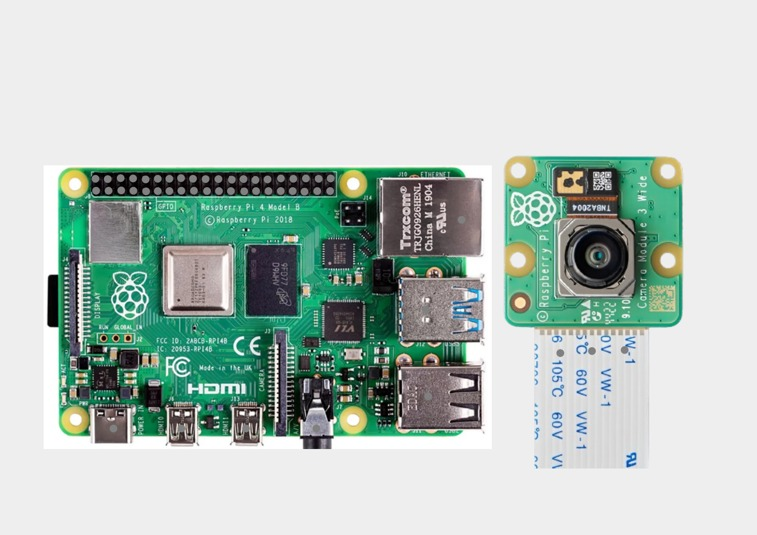

histogram.py
Real-Time Camera Histogram Analyzer
To capture live images from an OV5647 CSI camera, calculate a real-time grayscale brightness histogram, display minimum, maximum and average brightness, and classify the scene as DARK, NORMAL or BRIGHT.
The Raspberry Pi 4B uses Picamera2 to capture frames from the OV5647 CSI camera.
OpenCV converts each frame to grayscale and builds a 256-level brightness histogram from 0 to 255. NumPy calculates the minimum, maximum and average brightness values.

Runs Picamera2, OpenCV and NumPy.

Captures the live image for brightness analysis.

Provides stable power to the Raspberry Pi.
| Component | Connection | Raspberry Pi Connection |
|---|---|---|
| OV5647 CSI Camera | CSI Camera Interface | Raspberry Pi Camera / CSI Connector |

rpicam-hello -t 0.
~/Desktop/camera_histogram.
histogram.py.
python3 histogram.py.
Q
to stop the analyzer.
Raspberry Pi Experiment · Code Review
Select a step. The matching code block will highlight in blue.
Choose a step. The matching code will light up on the left.
Picamera2 captures CSI camera frames, OpenCV processes and displays them, and NumPy calculates brightness values.
A grayscale value of 0 is black and 255 is white. The thresholds 70 and 180 can be adjusted after testing in the intended environment.
Try it: Cover the camera, then point it toward a bright scene and observe how the histogram moves.
Two OpenCV windows appear: one showing the live camera image and brightness values, and another showing the grayscale brightness histogram.
The Real-Time Camera Histogram Analyzer successfully measures the brightness distribution of live CSI camera frames and classifies each scene as DARK, NORMAL or BRIGHT.